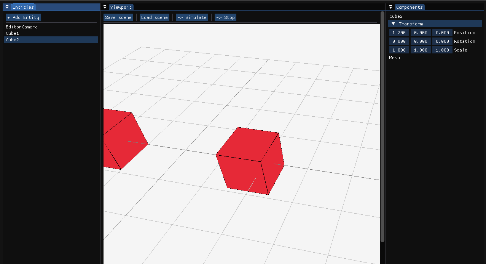
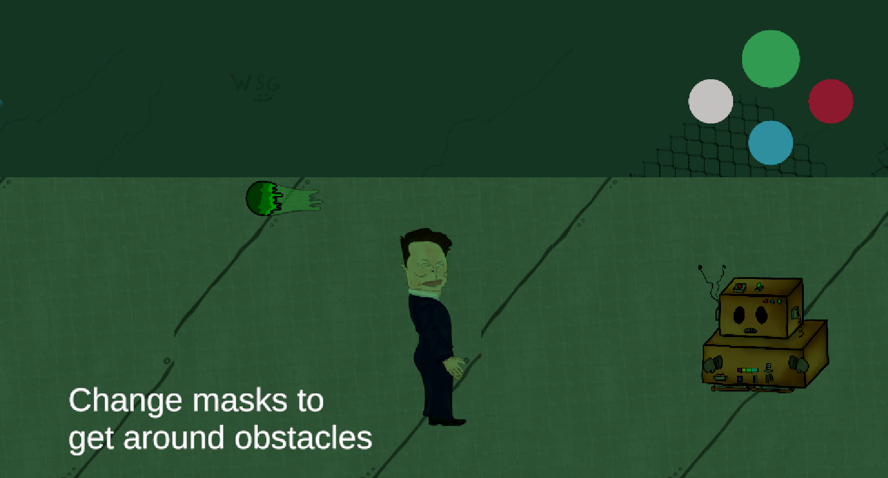

Sobre mí
Programador de videojuegos con un juego publicado en Steam (Unwoven) y especialización en gameplay, IA y animaciones en Unreal Engine. Máster en Desarrollo de Videojuegos (UCM) y grado en Ingeniería Informática (UAM). He creado un motor 3D con editor propio en C++ y he desarrollado proyectos en Unity. Compagino mi formación con experiencia profesional en desarrollo full-stack, que me aporta rigor en equipo, control de versiones y trabajo en producción.
Proyectos

Unwoven
Unwoven es un twin stick shooter en el que el jugador debe completar
salas repletas de hordas de enemigos, mientras obtiene nuevas
habilidades y completa un mapa pseudoaleatorio.
Unreal Engine
C++
Publicado en Steam
Unwoven
Unwoven es un twin stick shooter en el que el jugador debe completar salas repletas de hordas de enemigos, mientras obtiene nuevas habilidades y completa un mapa pseudoaleatorio.
Rol en el proyecto
Como programador en el proyecto, trabajé principalmente en la IA de los cuatro enemigos del juego: un enemigo que choca al contactar con el jugador, un enemigo que ataca a distancia, un enemigo que recorre las habitaciones colocando trampas y un enemigo tanque al que solo se le puede golpear por la espalda. Para la implementación, utilicé herramientas de Unreal como las EQS y los Behaviour Trees.
Además, implementé funciones de gameplay como el autoapuntado, la curación (utilizando el sistema GAS de Unreal), las trampas y la mecánica de reaparición tras morir.
Por último, implemente las animaciones del enemigo que coloca las trampas y del enemigo que explota por contacto, utilizando el Animation Blueprint de Unreal, así como los animation montages y notifys.
Plataformas
Gameplay completo

Game engine y editor
Con el objetivo de aprender y mejorar mis habilidades con C++ decidí desarrollar mi propio motor 3D
de videojuegos con su respectivo editor desde cero, siendo el resultado el PeruchoEngine. El motor
contiene una serie de componentes ya creados y permite la creación de diferentes escenas con sus
respectivas entidades desde el editor, así como la asignación de componentes a estas entidades.
C++
Game engine y editor
Con el objetivo de aprender y mejorar mis habilidades con C++ decidí desarrollar mi propio motor 3D de videojuegos con su respectivo editor desde cero, siendo el resultado el PeruchoEngine. El motor contiene una serie de componentes ya creados y permite la creación de diferentes escenas con sus respectivas entidades desde el editor, así como la asignación de componentes a estas entidades.
Rol en el proyecto
Como autor del proyecto realicé todo el desarrollo desde cero, apoyándome en las librerías raylib (para el renderizado) y ImGui (para la UI del editor). En el futuro planeo sustituir la primera de estas librerías por mi propio pipeline de renderizado.
Dentro del proyecto el editor, el motor y el juego se encuentran separados para que el editor pueda usar la dll del motor y del juego ya compiliadas y recompilarlas en caso de que sea necesario.
El proyecto permite crear, eliminar entidades, añadir componentes a las entidades y modificar los parametros de sus componentes, así como crear y guardar escenas y simular el comportamiento de las entidades en el viewport.
Showcase del editor

Plataforma de minijuegos accesibles
Proyecto que permite a un administrador crear minijuegos de colorear o de mesa personalizados e incluso
importar escenas de otros proyectos de Unity, para crear minijuegos. Estos minijuegos, orientados a
personas de la tercera edad, son accesibles posteriormente a través de personajes en un entorno 3D (una aldea).
Unity
C#
Plataforma de minijuegos accesibles
Proyecto que permite a un administrador crear minijuegos de colorear o de mesa personalizados e incluso importar escenas de otros proyectos de Unity, para crear minijuegos. Estos minijuegos, orientados a personas de la tercera edad, son accesibles posteriormente a través de personajes en un entorno 3D (una aldea).
Rol en el proyecto
Realicé el desarrollo del proyecto en su totalidad con la ayuda de algunos assets 3D y música sin derechos de autor.
Para la carga dinámica de escenas utilicé Unity adressables, lo que me permitió cargar minijuegos nuevos en un proyecto ya compiliado.
Plataformas
Video con las opciones del proyecto

E-MASK
Side-scroller realizado para la Global Game Jam en el que el jugador debe controlar a Elon Mask,
evitando trampas y enemigos para acceder a un ordenador y tweetear.
Unity
C#
E-MASK
Side-scroller realizado para la Global Game Jam en el que el jugador debe controlar a Elon Mask, evitando trampas y enemigos para acceder a un ordenador y tweetear.
Rol en el proyecto
Realicé el shader que permite cambiar el color del mundo y hacer que los enemigos de ese color desaparezcan utilizando el Shader Lab de Unity, así como la implementación del sonido a través de FMOD, la UI del juego y de las cámaras de detección.
Plataformas



Formación
Universidad Autónoma de Madrid
Universidad Complutense de Madrid
Experiencia
Findirect (Financiera Española de Crédito a Distancia, E.F.C., S.A.)
Unwoven (Graveyard Trials)
Página de Steam: https://store.steampowered.com/app/4551090/Unwoven